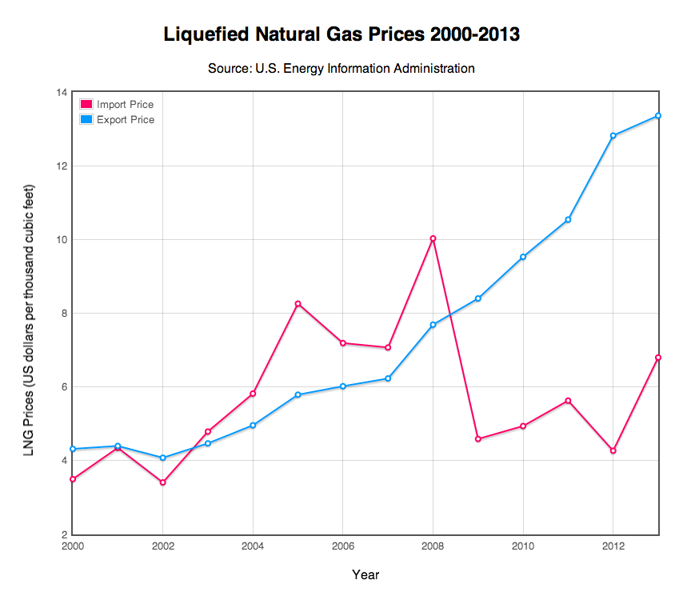

Cove Point facility in Lusby, Md. (Capital News Service photo by Amanda Salvucci)
Marylanders Brace for Natural Gas Export Facility
By Lyle Kendrick
Capital News Service
.jpg)
COVE POINT - The natural gas pipes on Dominion’s Cove Point property begin on a pier in the Chesapeake Bay.
They then descend underground and run for more than a mile behind the walls of a dimly-lit tunnel for foot-brake bicycles that workers use to travel from the dock to shore. Above ground, the pipes pass acres of trees and finally connect to seven massive storage tanks before the gas ultimately travels to American consumers.
This winter, they have been empty of the imported gas that filled them for years. But now, Dominion and Maryland are bracing for the Chesapeake Bay dock, which was once a starting point for imported gas’ journey on American soil, to be the takeoff spot for exports.
When that happens, Cove Point will become the first operational gas exporting facility on the East Coast. Dominion plans to begin construction by the end of the year.
The plan to export gas has raised questions across the state about whether the plant will be a boon for the economy or cause significant damage to the environment.
Some Marylanders see the export plant, like Dominion does, as a job-creating opportunity for the state that is more environmentally-friendly than coal production.
“It gives us a chance to export something,” said Delegate James Proctor, D-Calvert and Prince George’s.

Cove Point facility in Lusby has been importing liquefied natural gas for more than 30 years. Dominion acquired the facility in 2003 and plans to build a facility to export LNG. (Capital News Service photo by Amanda Salvucci)
But others see the conversion as an environmental hazard that exposes all of Maryland to the potential risks of gas obtained through hydraulic fracturing, or fracking, and fear it could lead to use of the controversial gas-extraction method within the state.
For Dominion executives, the switch is logical due to increased global demand for American gas and, with $3.8 billion worth of changes, will be an efficient way to use the existing facility.
“It’s the same thing,” said Mike Frederick, vice president of Dominion’s LNG operations. “It’s just in reverse.”
On the Dominion property, the main change will be the addition of a liquefaction plant that will cool the American-drilled natural gas and turn it into a liquid at 260 degrees below zero. The process reduces the gas volume and makes transporting it more efficient.
Dominion executives said a main heat exchange system, a turbine, compressors and cryogenic equipment will be among the project’s highest costs but declined to give specific amounts.
While the construction process has not begun, Dominion has reached trade deals with Japan-based business group Sumitomo and India-based company GAIL. Dominion plans for the export facility to be operational by 2017.
The crisis in Ukraine has led the Department of State and the Obama administration to develop a strategy to more quickly deploy the United States’ natural gas to undermine Russia’s influence over Ukraine and Europe in future years.
The United States was a major natural gas importer until a few years ago. The gas supply in basins like Marcellus and new methods for extracting it, such as fracking, now enables the U.S. to wield political and economic influence as an exporter.
Russia supplies the majority of Ukraine’s natural gas, but recently announced it would no longer do so at a reduced price.
Though Dominion officials like Frederick said they see themselves as middlemen between gas basins in the region, such as the Marcellus Shale basin that runs under Pennsylvania and Western Maryland, and foreign importers, many across the state said they foresee consequences for the whole state if exports are permitted.
The export proposal is pending review from the Federal Energy Regulatory Commission and the power plant on the facility is being reviewed by Maryland’s Public Service Commission.
From the Eastern Shore to the Western Mountains
Paul Roberts, who owns Deep Creek Cellars, a winery in Garrett County, said his business has been doing well for the past few years.
But he has been hesitant to hire more employees or expand his facility because he’s not sure whether there will be a renewed interest in leasing land in Maryland that the Marcellus Shale basin runs under for potential future drilling causing land prices to go up, he said.
“I have to decide if it’s worth staying in Maryland any longer. I’m just at that point,” said Roberts, who is also the cofounder of Citizen Shale, a Western Maryland group against fracking.
Fracking in Maryland is currently not allowed under Gov. Martin O’Malley’s order that prevents the Maryland Department of the Environment from approving drilling permits until the end of an ongoing scientific study examining the gas extraction process.
However, the study ordered by O’Malley is planned to be finalized later this year and Mike Tidwell, director of the Chesapeake Climate Action Network, said he fears a gas export facility in Cove Point will lead the state government to allow fracking in Maryland.
“I believe that if the Cove Point export facility is built for fracked gas, it is inconceivable that fracking won’t come to Maryland,” he said.
The Chesapeake Climate Action Network and other organizations, such as the Sierra Club, have held statewide protests, including one in Baltimore in February against the facility and the 130-megawatt power plant Dominion said is needed for exporting.
Like Roberts, some in the Western Maryland real estate market are also eying whether Cove Point generates interest in land among energy companies, said Paul Durham, who works for Heritage Resources LLC, a consulting company in Western Maryland that works with natural resources, land planning and development.
“If we experience the same effects that have been seen in other states, we’ll see a tougher environment to sell some properties that have been impacted by gas development,” Durham said.
He said shale gas development has a stigma of being associated with groundwater contamination and based on what’s gone on in states like Pennsylvania, property values can take a hit if drilling occurs nearby.
But some in Western Maryland look positively at the possibility of gas production in their region.
Delegate Wendell Beitzel, R-Garrett, said he remembers growing up on his father’s farm and flares going off on nearby land when workers struck natural gas.
“We’d go out there and admire the activity,” he said.
Beitzel said there were never any problems with contamination on the farms growing up, which was before hydraulic fracturing was a widespread method of gas extraction.
Beitzel added that fracking enables drilling multiple wells from one location meaning there would be even less of a disturbance to nearby land if the practice were allowed in Maryland today.
While he doesn’t think fracking is dangerous, he thinks those who oppose American fracking should recognize that the extraction process has to be done somewhere, Beitzel said.
“It’s like, ‘That’s okay. It’s not in your backyard,’” he said.
While Western Maryland has the most natural gas under it, other counties in the state, some with smaller basins under them, are considering how the Cove Point export facility could affect them.
The county council for Montgomery County adopted a resolution in early February urging the Federal Energy Regulatory Commission to complete an environmental impact statement for the facility.
The commission is working on an environmental assessment but an environmental impact statement would look at a wider range of issues.
George Leventhal, vice president of the county council, wrote the resolution and said he is concerned about the impact of emissions brought on by the liquefaction plant and other elements of the facility on the state’s land and water.
“The Chesapeake Bay belongs to all of us,” he said.
He said he is also concerned because the facility could lead to increased pressure for Maryland to frack, including in the small Culpeper basin which runs partly under the northern part of Montgomery County.
The Economics of Natural Gas
In addition to environmental concerns surrounding the plant, some question what will happen to domestic gas prices if gas is exported from Maryland.
Diana Dascalu-Joffe, senior general counsel for the Chesapeake Climate Action Network, said that because demand for natural gas is rising in the United States and many coal-fired power plants are being shut down, residents could expect higher prices if Maryland began exporting natural gas.
But John Felmy, a chief economist with the American Petroleum Institute, said the supply of American gas is high enough to handle the demand without affecting consumer prices in Maryland.

Anti-fracking demonstrators march at Baltimore City Hall, Feb. 20, 2014. (Capital News Service photo by Amanda Salvucci)
“All the development of natural gas we’ve had, there’s still a lot that can come forth,” he said.
According to a report by the consulting group National Economic Research Associates for the Department of Energy, exports do not drive up domestic prices to the level foreign countries are willing to pay for American imports.
The report notes that the cost of transportation, liquefaction and turning the LNG from liquid to gas form at the import site ensure that domestic prices will not be similar to foreign costs.
The report also points to a capital investment in liquefaction facilities and an improved U.S. trade balance as foreign companies put more money into the American economy.
However, the report also notes that if the country is producing gas in increased, steady amounts, it will increase the marginal cost of supply which will lead to higher prices in the United States.
This will cause higher prices for consumers who use natural gas and industries that factor natural gas heavily into their budgets.
The peak of the export facility’s construction will be next year or in 2016 and the project will create up to 3,000 jobs, said Brent Booker, secretary-treasurer of North America's Building Trades Unions.
“This means 3,000 people will pull their car up into the parking lot and get bussed down to the project,” he said.
The project will use both Calvert County residents and workers from across Maryland, according to Dominion.
He said Maryland’s unemployment rate for construction workers is about 10 percent and the unions will use apprenticeship and skill development programs to give employees of the construction process long-term jobs.
Those skills include electric work, pipe fitting, welding and heavy equipment operation, he said.
In addition to the direct construction jobs, the project will also create indirect jobs, Booker said.
“Obviously you’ve got lots of suppliers, lots of vendors, lots of manufacturing of the equipment and the processes that will come there,” he said.
Tidwell, of the Chesapeake Climate Action Network, said that while there are some jobs that will be created by the export facility, most are not permanent. He said he believes Dominion would create more jobs if the company instead invested in wind and solar energy projects in Maryland and Virginia.
But in addition to natural gas exports, Dominion is already moving forward with some mid-Atlantic wind energy investments.
Dominion filed a request in February with the Bureau of Ocean Energy Management to bid for about 80,000 acres of land off Maryland’s coast to develop wind turbines.
LNG import and export prices, 2000-2013. (Capital News Service graphic by Amirah Al Idrus and Hyon-Young Kim)
In September, Dominion paid $1.6 million to lease 112,800 acres of land off the Virginia coast for offshore wind energy.
Karl Neddenien, media relations manager at Dominion, said Dominion expects the first turbine for the Virginia project to be installed in 10 years if it is approved by state regulators.
But Tidwell said Dominion has not shown nearly the same immediacy to wind and solar energy as it has natural gas.
“There is no caution apparently when it comes to fracking,” he said. “They don’t even want to do an environmental impact statement.”
As of Feb. 11, the Department of Energy received a total of 37 applications to export domestically produced LNG to countries both with and without free trade agreements.
The only East Coast terminals proposed were in Cove Point and Elba Island in Georgia.
Despite concerns across the state, Dominion’s Frederick said canceling planned gas exports from Cove Point would not end the sale of East Coast gas to foreign countries.
“The reality is that gas will go somewhere,” he said.